Control técnico de assets
Revisión estructural de SVG, PNG, JPG y piezas sociales. Fecha de control: 22 de septiembre de 2026.
Resultado
Paquete listo para uso digital
Los logos de producción, símbolos y wordmarks tienen alternativas vectoriales sin dependencia tipográfica; las piezas sociales cuentan con exportaciones sRGB de 8 bits en sus dimensiones finales.
Masters vectoriales portables
logo-simbolo.svg: versión principal a color.logo-simbolo-invertido.svg: M blanca, P coral y cuña violeta para fondo oscuro.logo-simbolo-blanco.svg: reverso monocromático blanco.logo-simbolo-monocromo.svg: versión tinta a un color.logo-horizontal-contornos.svg: firma de producción sobre fondo claro.logo-horizontal-contornos-invertido.svg: firma completa reversa y transparente.logo-horizontal-simple-contornos.svg: lockup simplificado para tamaños medianos.logo-horizontal-simple-contornos-invertido.svg: lockup simplificado reverso y transparente.- Los cuatro archivos
wordmark-*-contornos.svgcontienen el lettering convertido a curvas.
Todos incluyen viewBox. Los lockups de producción contienen rutas vectoriales directas, no usan elementos <image>, no incrustan archivos base64 y no requieren instalar Instrument Sans.
Fuentes editables con dependencias
logo-horizontal.svgylogo-horizontal-invertido.svgusan la fuente local para conservar el segundo mensaje editable.facebook-portada.svg,sistema-visual.svgypost-01-lanzamiento.svgusan Instrument Sans desdefonts/.post-01-lanzamiento.svgenlaza ademásassets/post-01-productos-base.png.
Estas fuentes deben mantenerse dentro de la estructura del paquete. Para publicar o entregar a un tercero, usar los PNG/JPG finales o los lockups en contornos.
La descarga InstrumentSans-MultiPRO.zip agrupa el TTF oficial y OFL.txt; el archivo tipográfico original no se modificó.
Exportaciones finales
| Archivo | Dimensión | Estado |
|---|---|---|
facebook-perfil-1080.png | 1080 × 1080 | sRGB, 8 bits, opaco, margen para recorte circular |
facebook-portada-1640x624.png | 1640 × 624 | sRGB, 8 bits, opaco, texto principal en blanco |
facebook-portada-1640x624.jpg | 1640 × 624 | Calidad 92 para publicación ligera |
logo-simbolo-1024.png | 1024 × 1024 | sRGB, 8 bits, transparencia real |
logo-horizontal.png | 1680 × 529 | sRGB, 8 bits, transparencia real |
logo-horizontal-invertido.png | 1680 × 529 | sRGB, 8 bits, reverso con transparencia real |
logo-horizontal-produccion.png | 2160 × 680 | Firma completa en contornos, transparente |
logo-horizontal-produccion-invertido.png | 2160 × 680 | Firma completa reversa, transparente |
logo-horizontal-simple.png | 2080 × 520 | Lockup simplificado, transparente |
logo-horizontal-simple-invertido.png | 2080 × 520 | Lockup simplificado reverso, transparente |
sistema-visual-v2.png | 1920 × 1080 | Lámina plana reconstruida con los masters exactos |
post-01-lanzamiento-1080x1350.png | 1080 × 1350 | Arte principal listo para feed 4:5 |
post-01-lanzamiento-1080x1080.png | 1080 × 1080 | Adaptación cuadrada lista para feed 1:1 |
Límites de la validación
- La revisión confirma estructura, dimensiones, color, transparencia, copy y renderizado local.
- El recorte definitivo de Facebook debe comprobarse después de subir los archivos a la plataforma.
- Para uniformes, rótulos, vinil o empaques, todavía se recomienda una prueba física con el proveedor.